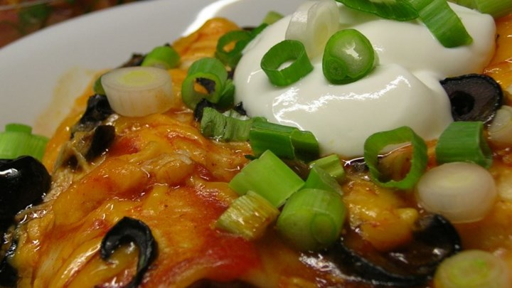

Angela's Awesome Enchiladas

- Description:The secret is in the seasonings! I whipped these up on my own using stuff I had on hand. Shredding the chicken is the most time-consuming step, but it's worth it in the end. Give these babies a try! Serve with sour cream and a side of Spanish rice."
- Details:
- serving:2 people
- cooking time:1h 45 min
- notes:Aluminum foil can be used to keep food moist, cook it evenly, and make clean-up easier.
- Ingredients:
- Place the chicken in a large pot and add water to cover. Bring to a boil over high heat, then reduce the heat to medium-low, cover, and simmer until the chicken pieces are no longer pink, about 10 minutes. Shred chicken by placing two forks back to back and pulling meat apart. Set the shredded chicken aside. Meanwhile, combine the cream of chicken soup, sour cream, and chili powder in a saucepan. Bring to a simmer over low heat, stirring occasionally, then turn off the heat and cover to keep warm.
- Heat the butter in a skillet over medium heat. Stir in the onion; cook and stir until the onion has softened and turned translucent, about 5 minutes. Add the shredded chicken, chopped green chilies, taco seasoning, half of the bunch of chopped green onion, and water. Allow to simmer for 10 minutes. Stir in the lime juice, onion powder, and garlic powder; simmer for an additional 10 minutes.
- Preheat an oven to 350 degrees F (175 degrees C). Stir 1 cup of the soup mixture into the skillet with the chicken mixture. Spread the remaining soup mixture on the bottom of a 9x13 inch baking dish.
- Nutrition Facts
Per Serving: 709 calories; 36.3 g fat; 52.5 g carbohydrates; 42.2 g protein; 126 mg cholesterol; 1764 mg sodium.